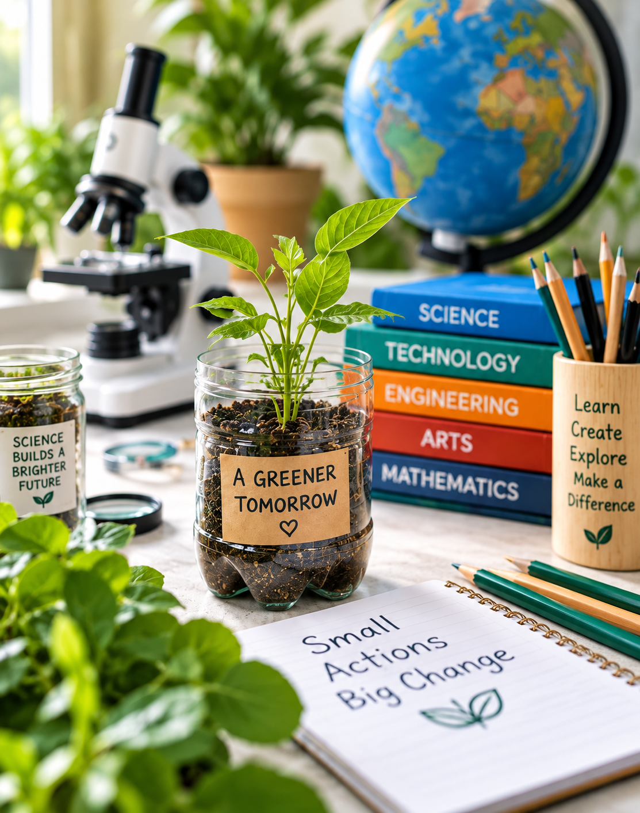

Investigate a question
Use observation and experiments to explore a real-world environmental topic.
Explore science through creative, hands-on activities.

Science, technology, engineering, art, and math connected to environmental themes.
EcoScience Learning is currently presented as a proposed educational initiative. The experiences below are examples of the direction of the program, rather than confirmed bookable services.
Use observation and experiments to explore a real-world environmental topic.
Build models, record ideas, and test possible solutions.
Compare observations, explain results, and communicate what was learned.
Learn about the proposed initiative and how future partnerships could take shape.
Contact & Project Information →